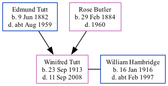

Winifred May Hambridge (née Tutt) 1913 - 2008
[ Home ] | [ Calendar ] | [ Surnames Index ] | [ Family History ]The 2nd of 7 children of Edmund Tutt (a bricklayer's laborer) and Rose Butler (a laundress)Winifred Tutt, the second cousin once-removed on the father's side of Nigel Horne, was born in St Lawrence, Thanet, Kent, England on Sep 23, 19131,2,3. She married William Hambridge (a bricklayer) in Thanet, Kent, England around May 19394.
Throughout her life, Winifred lived in several places: at 20 Grosvenor Road, St Lawrence in Thanet on Jun 19, 19211; at 10 North Avenue, Ramsgate, Kent on Sep 29, 19392; and at 25 Bradley Road, Ramsgate, Kent in 20085.
She died on Sep 11, 2008 in Ramsgate, Kent, England.
Parents
- Edmund Thomas was born on Jun 9, 1882
- Rose was born on Feb 29, 1884
Citations
- 1921 Census Of England & Wales - Findmypast (was age 7 and the daughter of the head of the household)
- 1939 Register - Findmypast (was the wife of the head of the household)
- England & Wales births 1837-2006 - Findmypast
- England & Wales Marriages 1837-2005 - Findmypast
- UK, Electoral Registers, 2003-2010
Media
England & Wales marriages 1837-2005 - BMD/M/1939/2/AZ/001487/075
England & Wales births 1837-2006 - BMD/B/1913/4/AZ/001518/108
1939 Register - TNA/R39/1763/1763J/003/44
1921 Census of England & Wales - GBC/1921/RG15/04480/0163/04
Family Tree
Generated by ged2site. Last updated on Nov 13, 2024